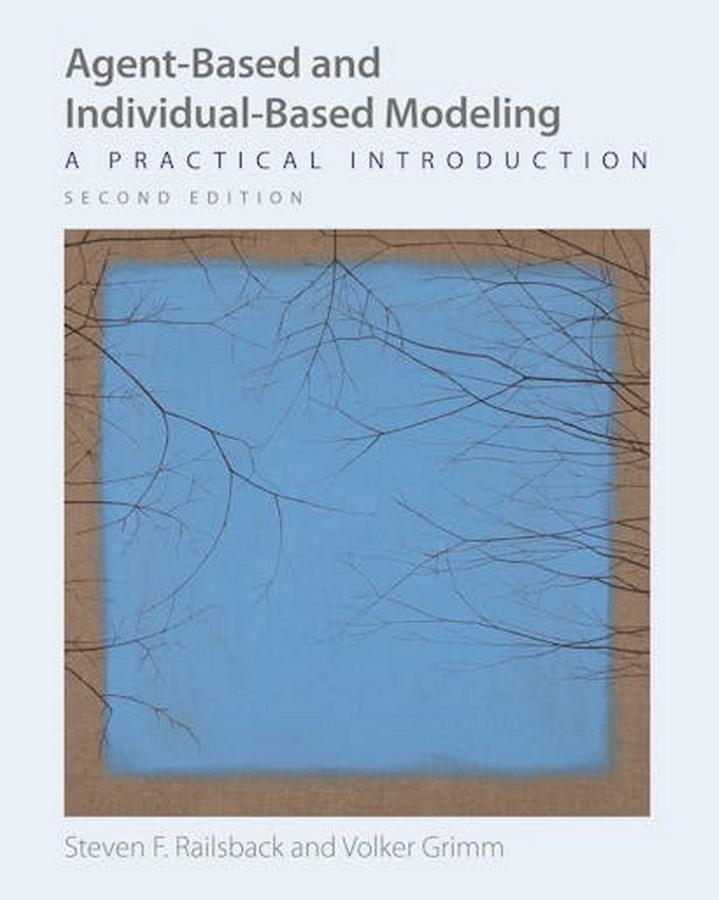
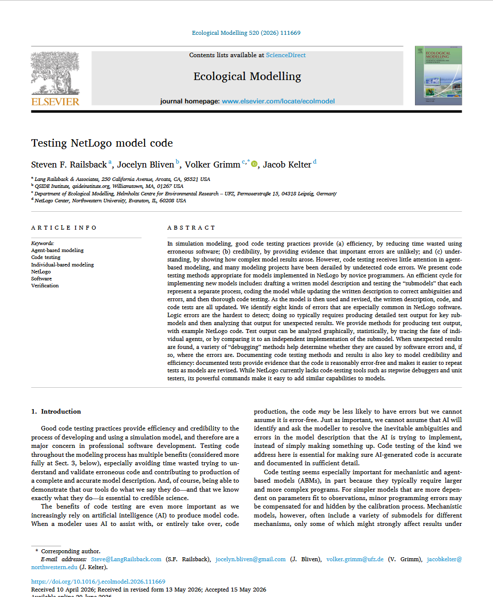
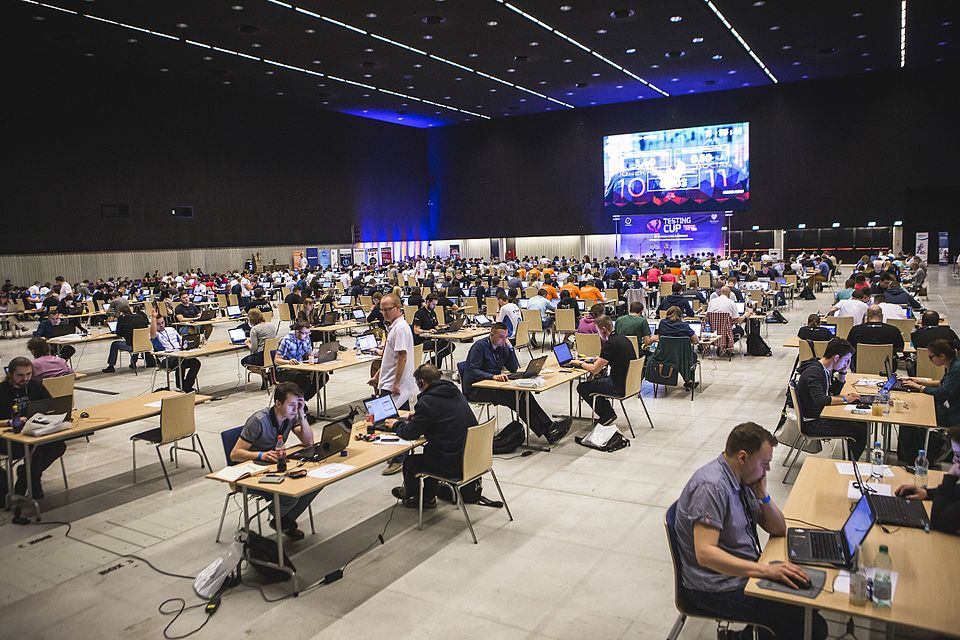
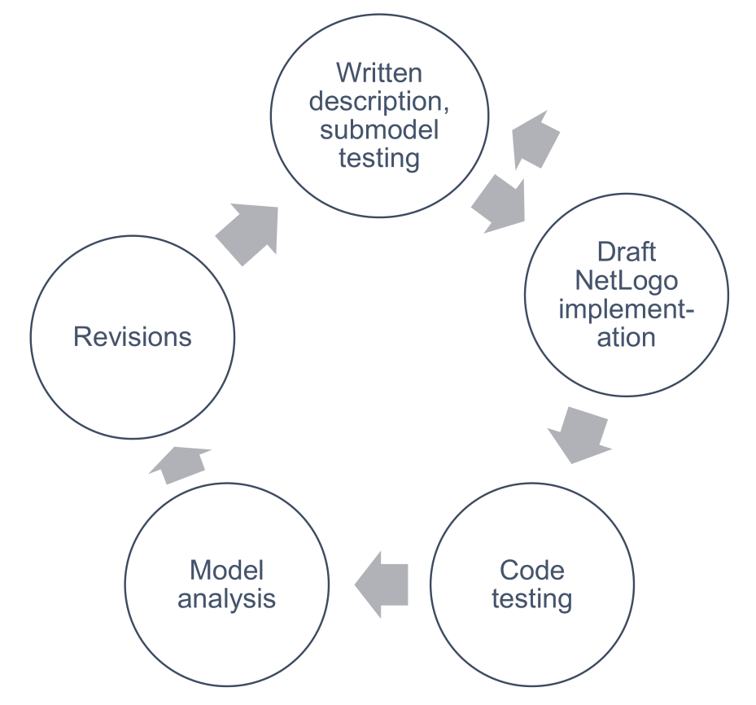
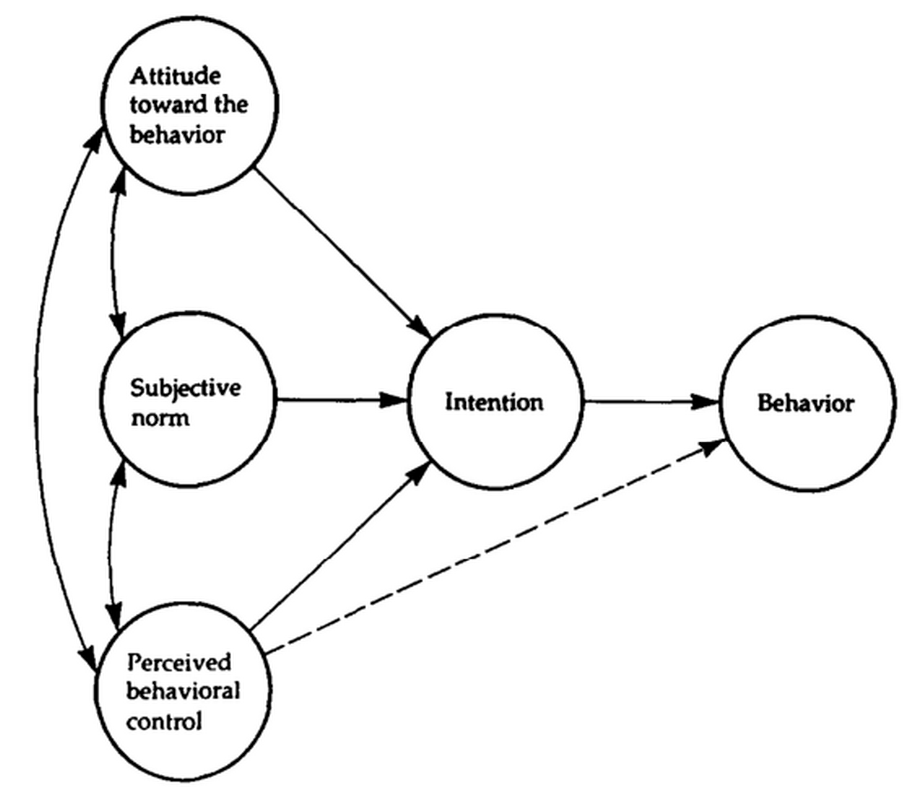
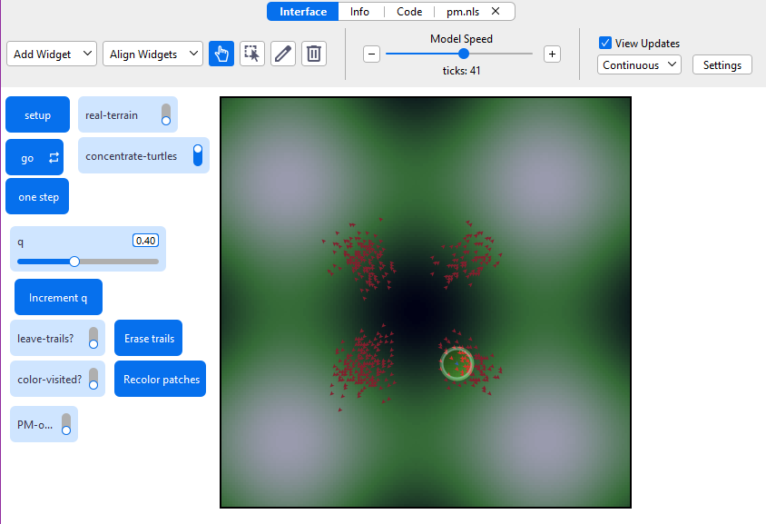
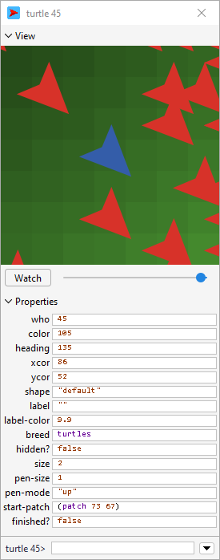
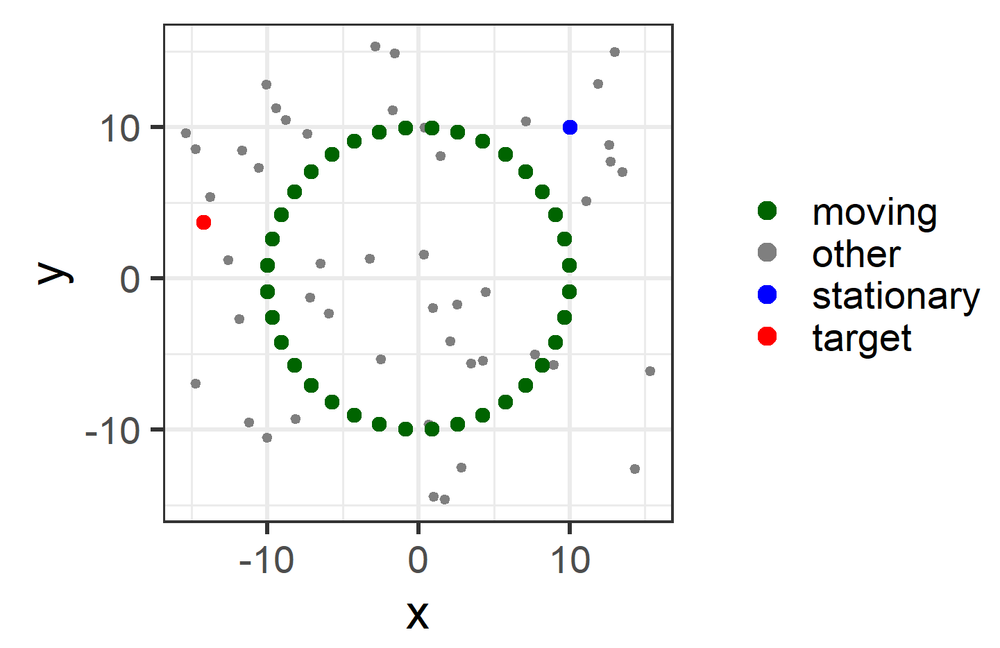
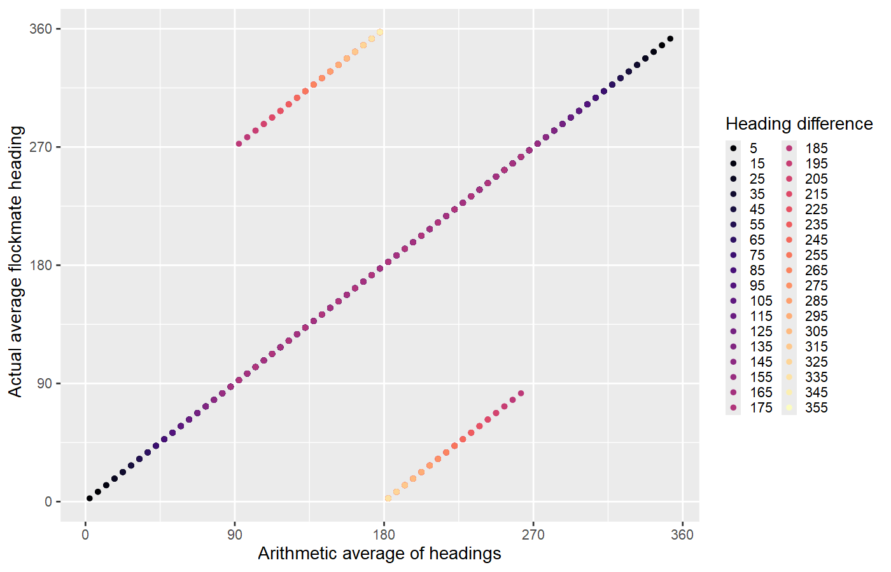

EES 4760/5760
Agent-Based and Individual-Based Computational Modeling
J. Magnolia Gilligan
National Academies: Reconciling Observations of Global Temperature Change (2000)


S.F. Railsback & et al., “Testing NetLogo Model Code”
Ecological Modeling 520, 111669 (2026)
DOI: 10.1016/j.ecolmodel.2026.111669
Polish Software-Testing Championship, 2016

Photo: Radoslaw Smilgin/Wikimedia
NetLogo Modeling Cycle

Railsback et al. (2026)
H, Muelder, & T. Filatova, J. Artificial Societies & Social
Simulation 21, 5 (2018).
DOI: 10.18564/jasss.3855

I. Ajzen, Org. Behavior & Human Decision Processes
50, 179 (1991)
DOI: 10.1016/0749-5978(91)90020-t
set age age+1
let partner one-of other turtles
let prospects other [turtles in-radius 5]
of partner
let prospects [other turtles in-radius 3]
of partnerask turtles [
set xcor random-normal 0
(world-width / 3)
]
ask turtles [
set xcor random-normal 0
(world-width / 3)
set ycor random-normal 0
(world-width / 3)
]
self vs. myself
Misunderstanding primitives
if prob < random 1.0
if prob < random-float 1.0Incorrect world settings:
primitives-example.nlogox
modified-flocking.nlogox
modified-flocking-fixed.nlogox
Syntax is correct, but computer can’t execute:
show exp 1000
show sqrt -1
show 1 / 0Watch out for random-normal, which can sometimes produce much larger or smaller values than you expect
show min (n-values 1E5
[ -> random-normal 10 2.5 ])butterflies.nlogox in butterfly-model
folder
inspectwatchfollowinspectwatchfollow

butterfly-PM.nlogox
__includes ["pm.nls" ]
globals [
...
]
...
to setup
ca
set PM-on? True
PM-setup "PM-output.csv" (list
"turtle" "xcor" "ycor" "elevation"
"q" "random"
"nbor-x" "nbor-y" "nbor-elevation"
"uphill?" "moved?"
"final-xcor" "final-ycor"
"final-elevation")...
endto go ; This is the master schedule
ask turtles with [not finished?] [move]
tick
;; At end of tick,
;; write procedure monitor output to file. PM-write-output ; stop when all the butterflies are at the summit, or
; 1000 ticks, whichever comes first
if ticks >= 1000 or all? turtles [finished?]
[
stop
]
end ; of go
to move
let rand random-float 1.0
let old-patch patch-here
PM-add (list who xcor ycor elevation q rand)
PM-add [ (list pxcor pycor elevation) ] of
max-one-of neighbors [elevation] let uphill? false
ifelse random-float 1 < q
[
set uphill? true
uphill elevation
] ; Move uphill
[
move-to one-of neighbors
] ; Otherwise move randomly PM-add (list uphill? (old-patch != patch-here)
xcor ycor elevation) set visited? true
if color-visited? [ set pcolor yellow ] PM-save-rowend ; of move procedureflocking_PE.nlogox
explore-headings procedure:


butterflies_tif.nlogox
Put the line
__includes[ "tif.nls" ]near the top
Put the line
initialize-testsin to setup
To start a group of tests:
set-context "context description"To report on the control center after performing a set of tests:
resume-all-testsFor each test in the context:
test-that "name of test"
expect-that <expression> <condition>Example
test-that "turtle is happy"
expect-that happy? is-true
test-that "hope is greater than fear"
expect-that hope is-greater-than fearAll tests (32117) passed. Congratulations.
Testing butterfly movement: tick 0
All tests (707) passed. Congratulations.
Testing butterfly movement: tick 1
All tests (1419) passed. Congratulations.
Testing butterfly movement: tick 2
...
Testing butterfly movement: tick 78
All tests (55325) passed. Congratulations.
Testing butterfly movement: tick 79
**FAILS** Test that butterfly 115 moved,
test #1: did not expect (patch 118 118)
but got it.
**FAILS** Test that butterfly 115 moved to highest neighbor,
test #1: expected (patch 119 118) and got
(patch 118 118) instead.
Tests finished with errors: 2/56033 tests failed!
Testing butterfly movement: tick 80
**FAILS** Test that butterfly 227 moved,
test #1: did not expect (patch 118 118)
but got it.
**FAILS** Test that butterfly 227 moved to highest neighbor,
test #1: expected (patch 118 119) and
got (patch 118 118) instead.
Tests finished with errors: 4/56730 tests failed!to move
let rand random-float 1
let old-patch patch-here
let uphill? false
ifelse random-float 1.0 < q
[
set uphill? true
uphill elevation
] ; Move uphill
[
move-to one-of neighbors
] ; Otherwise move randomly
...
end